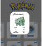
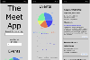

Work Experience
Portfolio Website

I have been taking the Full-Stacked Web Develoment Course with Career Foundry and this has been one of the projects that we have been working on. It includes the basic code to create my portfolio Website, which will be continually updated to suit the new changes and skills learnt. Please feel free to have a look and I'd love to hear any positive feedback or ideas that you may have!
See project on GitHubPokedex
I created an API fetch with Javascript. Here the Pokedex can be used to search through all current Pokemon Characters with a search tab as well as opening a Modal with extended information on each Character. This was a fun project that brought out the ability of Javascript.
See project on GitHubMeet App
This app was created to allow the user to search for events in cities around the world. It is a Progressive Web App (PWA) that makes use of the Google Calander API. The app is written in Javascript.
See project on GitHubMy Flix App
Creating a backend API to store information about movies and allow users to create lists of favorite movies. The program uses the following dependancies: Node.JS ,express, express-validator, passport ,passport-jwt, passport-local, body-parser, mongoose, cors, bcrypt, morgan, lodash and Executing program. The user is able to register, sign-in, change their profile as well as search movies, add them to their favorites, remove from favorites, view Genre Information, Director Information and an extended synopsys on the movies.
See project on GitHubChat App
The chat app was fun to create. This app allows the user to write messages to other users, take a picture with the camera, choose pictures from the Photo Gallery and send a live location, amoung other functions. The app works both offline and online. The Technology used in the creation of the App was React Native, Expo annd Google Firestore Database.
See project on GitHubMy Flix Angular
Using the backend from the first MyFlix Movie App, I turned it up a notch, using Angluar to recreate the site. The coding uses end to end testing, allowing you to test the coding during compilation, easing the debugging process. The program uses the following dependancies: angular/animations, angular/cdk, angular/common, angular/compiler, angular/core, angular/forms, angular/material, angular/platform-browser, angular/platform-browser-dynamic, angular/router, rxjs, tslib, zone.js. The user is able to register, sign-in, change their profile as well as search movies, add them to their favorites, remove from favorites, view Genre Information, Director Information and an extended synopsys on the movies.
See project on GitHub